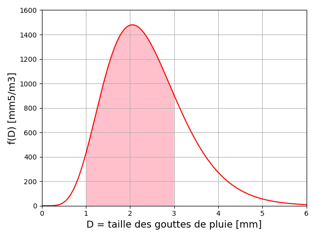
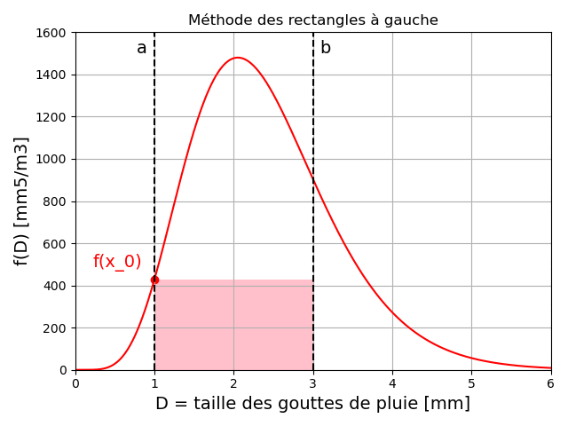
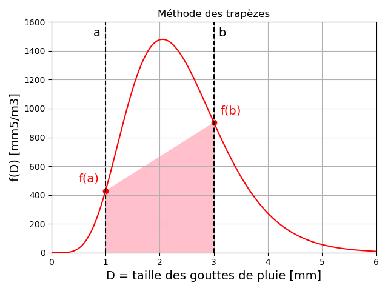
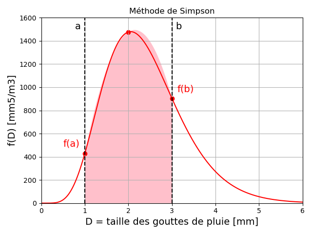
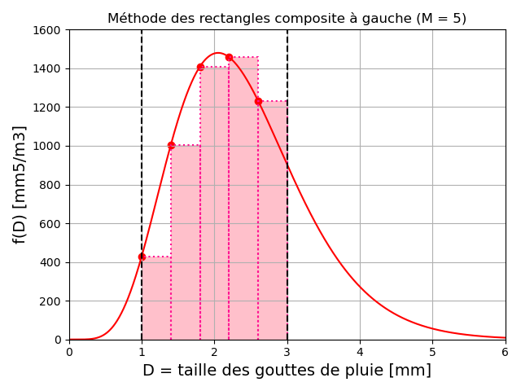
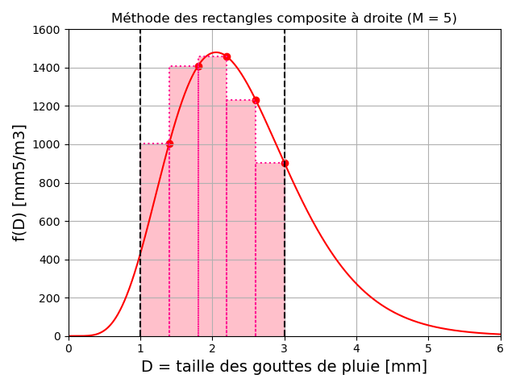
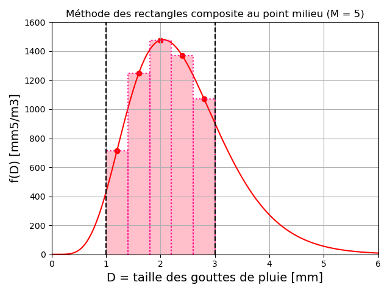
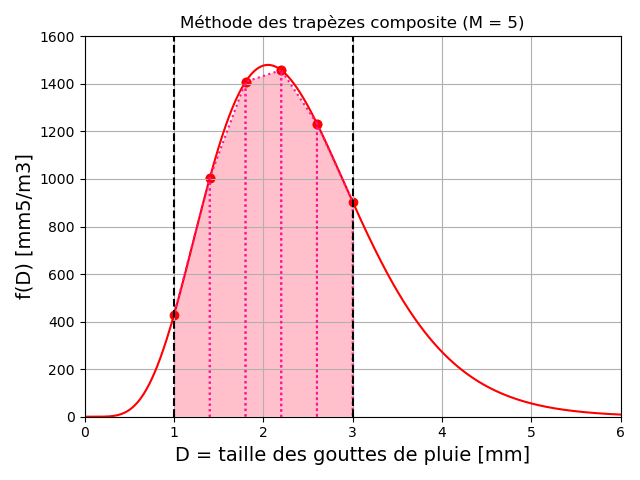
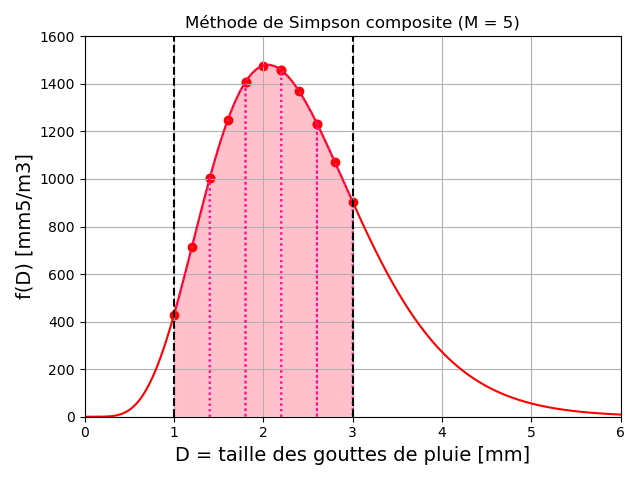
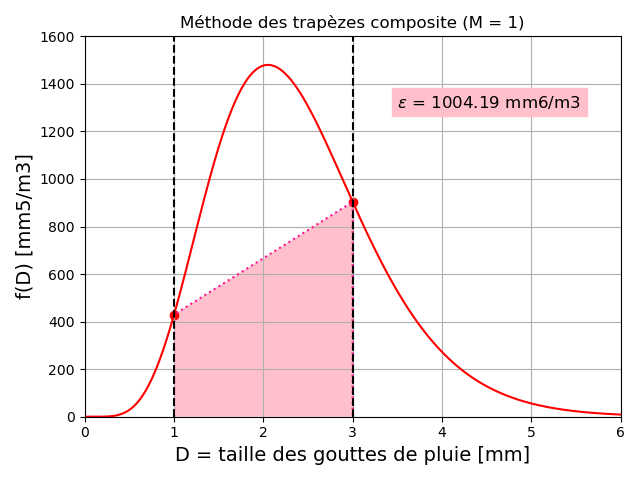

Chapitre IV : Intégration numérique
Ce chapitre porte sur les méthodes numériques pour l'approximation de l'intégrale d'une fonction.
Position du problème
Motivation
Le but de l'intégration numérique est d'évaluer la valeur de l'intégrale \(I\) d'une fonction \(f\) continue sur un intervalle \([a,b]\) avec \(a<b\) réels :
\(I = \int_{a}^{b} f(x) dx\)
On rappelle que cette intégrale représente l'aire comprise entre la courbe de la fonction, l'axe des abscisses, et les droites \(x=a\) et \(x=b\).
\(I\) est une intégrale définie dont le résultat est un scalaire. La fonction \(f\) peut être connue qu'en certains points, mais ne dispose pas de singularité sur \([a,b]\), qui est supposé fini et fermé.
Dans certains cas limités, l'intégrale peut être calculée analytiquement, à partir de la primitive de \(f\), notée \(F\) :
\(I = \int_{a}^{b} f(x) dx = F(b)-F(a)\)
Cependant, ce calcul peut être long et compliqué, et beaucoup de fonctions ne disposent pas d'expression analytique pour leurs primitives. On préfèrera faire appel à des méthodes numérique pour calculer une valeur approchée de \(I\).
L'approximation de \(I\) s'effectue le plus souvent à l'aide de combinaisons linéaires des valeurs de \(f\) : des formules de quadrature de type interpolation.
L'intégrale \(I\) est remplacée par une somme finie : \(I \approx \sum_{i=0}^{n} w_i f(x_i)\).
Exemple de problème
Au cours de ce chapitre, nous appliquerons les différentes méthodes d'intégration à un même exemple : La modélisation de la réfléctivité radar des gouttes de pluies.
En 1948, Marshall et Palmer ont proposé un modèle du facteur de réflectivité des gouttes de pluies \(Z\) (en \(mm^6 m^{-3}\)) pour les radars météorologiques :
\(Z = \int_{D_{min}}^{D_{max}} N_0 e^{- \Lambda D} D^6 dD\)
avec \(D\) le diamètre des gouttes supposées sphériques.
Les paramètres de ce modèle sont :
-
\(D_{min}\) la plus petite taille de goutte, que nous fixerons à \(1 mm\).
-
\(D_{max}\) la plus grande taille de goutte, que nous fixerons à \(3 mm\).
-
\(\Lambda\) une constante empirique en \(mm^{-1}\), pour laquelle Marshall et Palmer proposent \(4.1 R^{-0.21}\), avec \(R\) le taux de pluie que nous fixerons à \(5 mm.h^{-1}\).
-
\(N_0\) une constante empirique en \(m^{-3} mm^{-1}\) nommée "paramètre de forme", pour lequel Marshall et Palmer proposent \(N_0 = 8000\).
Ce modèle est encore aujourd'hui utilisé pour l'interprétation des mesures des radars météorologiques, dans le but d'estimer les précipitations aux sol à partir des réflectivités mesurées.
Afin d'estimer la réflectivité \(Z\) liée aux gouttes de pluie entre 1 et 3 cm, nous essayerons ici de calculer l'intégrale entre \(x=1\) et \(x=3\) de la fonction \(f(x) = N_0 e^{- \Lambda x} x^6\), dont la valeur est d'environ \(2337.49 mm^6/m^3\).

Sous Python on utilisera la bibliothèque Numpy :
import numpy as np
Puis, on définira les variables globales suivantes :
N0 = 8000 #Paramètre de forme (m3/mm)
R = 5 #Taux de pluie (mm/h)
La fonction \(f\) sera définie comme :
def f(D):
return N0*np.exp(-(4.1*R**-0.21)*D)*D**6
Formules de quadrature
Principe
| Idée |
|---|
| Approcher la fonction \(f\) par un polynôme \(p\). |
| Si cette approximation est suffisamment bonne : |
| \(I = \int_{a}^{b} f(x) dx \approx \int_{a}^{b} p(x) dx\) |
Cette approche a 2 avantages :
-
Les polynômes sont faciles à intégrer.
-
Cette méthode est utilisable même si on ne connait \(f\) qu'en un nombre fini de points \((x_i,f(x_i))\).
Les méthodes de Newton-Cotes et de Gauss s'appuient sur cette idée en utilisant des formules de quadrature de type interpolation, qui s'expriment comme une combinaison linéaire de valeurs de la fonction en des points à définir.
On cherche donc une valeur approchée de \(I\) au moyen d'une somme finie :
\(I = \int_{a}^{b} f(x) dx \approx I_n = \sum_{i=0}^{n} w_i f(x_i)\)
On dit que \(I_n\) est une formule de quadrature de type interpolation à \(n+1\) points
Les valeurs \(x_i\) sont les "pivots" ou "points / noeuds de quadrature".
Les coefficients \(w_i\) sont les "poids" de la formule de quadrature.
Formules de type interpolation
Soient \((x_i,f(x_i))\) avec \(i=0,1,...,n+1\) points d'interpolation. Un choix naturel consiste à approximer la fonction \(f\) par le polynôme de Lagrange de degré \(\leq n\) qui passe par ces \(n+1\) points :
\(f(x) \approx p(x) = \sum_{i=0}^{n} f(x_i) L_i(x)\)
Il en résulte la formule de quadrature de type interpolation à \(n+1\) points :
\(I = \int_{a}^{b} f(x) dx \approx I_n = \int_{a}^{b} p(x) dx = \int_{a}^{b} \sum_{i=0}^{n} f(x_i) L_i(x) dx\)
Par linéarité de l'intégrale, on obtient les coefficients de la formule de quadrature :
\(I_n = \sum_{i=0}^{n} f(x_i) \int_{a}^{b} L_i(x) dx\)
D'où : \(w_i = \int_{a}^{b} L_i(x) dx\)
Les poids \(w_i\) s'obtiennent par intégration des polynômes de Lagrange. Ils sont donc indépendants de \(f\) et ne dépendent que des points \(x_i\).
Degré de précision
On définit l'erreur de troncation pour l'intégration comme :
\(E(f) = I-I_n\)
Une formule de quadrature est dite exacte pour \(f\) si \(E(f)=0\).
| Degré de précision |
|---|
| Le degré de précision d'une formule de quadrature est l'entier positif \(n\) tel que \(E(p_i)=0\) pour tout polynôme de degré \(i \leq n\) et \(E(p_{n+1}) \neq 0\) pour un polynôme \(p_{n+1}\) de degré \(n+1\). |
Donc une formule de quadrature exacte sur l'ensemble des polynômes de degré \(\leq n\) est au moins de degré de précision \(n\).
Autrement dit, une formule de quadrature de degré de précision \(n\) vérifie :
-
\(I = \int_{a}^{b} p_k(x) dx = \int_{a}^{b} x^k dx = I_n = \sum_{i=0}^{n} w_i x_i^k\) pour tout \(0 < k \leq n\)
-
\(I = \int_{a}^{b} p_{n+1}(x) dx = \int_{a}^{b} x^{n+1} dx \neq I_n = \sum_{i=0}^{n} w_i x_i^{n+1}\)
| Théorème |
|---|
| Une formule de quadrature à \(n+1\) points est exacte sur l'ensemble des polynômes de degré \(\leq n\) |
| si est seulement si c'est une formule de quadrature de type interpolation à \(n+1\) points. |
Donc une formule de quadrature de type interpolation à \(n+1\) points est au moins de degré de précision \(n\).
Méthodes de Newton-cotes simples
Les méthodes de Newton-Cotes s'appuient sur la formule de quadrature de type interpolation de Lagrange :
\(I = \int_{a}^{b} f(x) dx = I_n + E(f) = \sum_{i=0}^{n} f(x_i) \int_{a}^{b} L_i(x) dx + E(f)\)
où \(E(f)\) est l'erreur de troncature.
Les pivots de quadrature sont régulièrement espacés :
\(x_i = x_0 + ih\) avec \(i=0,1,...,n\) et \(h = \frac{b-a}{n}\)
Les pivots sont donc fixes (équidistants) alors que les poids sont ajustés.
La régularité de la subdivision permet d'obtenir des formules qui sont très générales.
Il y a \(n+1\) pivots donc cette méthode est exacte pour les polynômes de degré \(\leq n\) au moins.
Méthode des rectangles (n=0)
Lorsque l'on ne dispose que d'un seul point \((x_0,f(x_0))\), on peut utiliser la formule des rectangles :
\(I = \int_{a}^{b} f(x) dx \approx I_0 = \int_{a}^{b} f(x_0) dx = (b-a) f(x_0)\)
On donnera différents noms à la méthode suivant le choix de \(x_0\) :
-
"A gauche" : si on choisit \(x_0 = a\).
-
"A droite" : si on choisit \(x_0 = b\).
-
"Au point milieu" : si on choisit \(x_0 = \frac{a+b}{2}\)
On remarque que \(I_0\) est l'aire du rectangle de largeur \(b-a\) et de longueur \(f(x_0)\).
Voici pour illustration l'aire de ce rectangle dans le cas de notre exemple :

Les formules des rectangles à droite et à gauche sont exactes pour des polynômes de degré 0 uniquement : leur degré de précision est de 0.
La formule au point milieu est aussi exacte pour les fonctions affines car elle exploite les symétries du problème : son degré de précision est de 1.
Si \(f\) est continue et 2 fois dérivable sur \([a,b]\), alors il existe \(\xi \in ]a,b[\) tel que \(I = I_0 + E(f)\) avec :
\(\begin{cases} E(f) = \frac{(b-a)^2}{2} f'(\xi) = \frac{h^2}{2} f'(\xi) \; si \; x_0 = a \; ou \; x_0 = b \\ E(f) = \frac{(b-a)^3}{24} f"(\xi) = \frac{h^3}{24} f"(\xi) \; si \; x_0 = \frac{a+b}{2} \end{cases}\)
On en déduit que :
-
Donc plus \([a,b]\) est petit, plus l'erreur est faible.
-
Pour les formules à droite et à gauche, l'erreur décroit en \(h^2\).
-
Pour la formule au point milieu, l'erreur décroit en \(h^3\).
-
Plus les variations de \(f\) sont limitées (\(f'\) faible), plus l'erreur est faible pour les méthodes à droite et à gauche.
Méthode des trapèzes (n=1)
Lorsque l'on dispose que de 2 points \((x_0,f(x_0))\) et \((x_1,f(x_1))\), on peut utiliser la formule des trapèzes :
\(I = \int_{a}^{b} f(x) dx \approx I_1 = \frac{(b-a)}{2} (f(a)+f(b))\)
\(I_1\) est une formule de quadrature de type interpolation à 2 points.
On remarque qu'elle correspond à l'aire d'un trapèze.
Voici pour illustration l'aire de ce trapèze dans le cas de notre exemple :

Si \(f\) est continue et 2 fois dérivable sur \([a,b]\), alors il existe \(\xi \in ]a,b[\) tel que \(I = I_1 + E(f)\) avec :
\(E(f) = - \frac{h^3}{12} f"(\xi)\)
La méthode des trapèzes est exacte sur l'espace des polynômes de degré \(\leq 1\) donc de degré de précision 1.
Par contre, elle est 2X plus lente que la méthode des rectangles au point milieu pour le même degré de précision.
Méthode de Simpson (n=2)
Lorsque l'on dispose que de 3 points \((x_0,f(x_0))\), \((x_1,f(x_1))\) et \((x_2,f(x_2))\), on peut utiliser la formule de Simpson.
Si on choisit \(x_0 = a\), \(x_1 = \frac{a+b}{2}\) et \(x_2 = b\) :
\(I = \int_{a}^{b} f(x) dx \approx I_2 = \frac{(b-a)}{6} (f(a)+4 f(\frac{a+b}{2})+f(b))\)
\(I_2\) est une formule de quadrature de type interpolation à 3 points.
On remarque qu'elle correspond à l'aire sous un morceau de parabole.
Voici pour illustration l'aire sous la parabole dans le cas de notre exemple :

Si \(f\) est continue et 4 fois dérivable sur \([a,b]\), alors il existe \(\xi \in ]a,b[\) tel que \(I = I_2 + E(f)\) avec :
\(E(f) = - \frac{h^5}{90} f^{(4)}(\xi)\)
La méthode de Simpson est exacte sur l'espace des polynômes de degré \(\leq 2\), et on peut même montrer qu'elle est de degré de précision 3.
Elle nécessite l'évaluation de \(f\) en 3 points, mais l'erreur diminue rapidement, en \(h^5\).
Méthodes de Newton-Cotes (n>0)
On peut généraliser les formule de quadrature de type interpolation de Lagrange à tout degré \(n>0\). On parle alors de méthodes de Newton-Cotes de manière générale.
On distingue 2 formules suivant si \(n\) est pair ou impair :
| Cas de \(n\) impair |
|---|
| Si \(f\) est dérivable \(n+1\) fois sur \([a,b]\), alors il existe un réel \(K\) et \(\xi \in ]a,b[\) tel que |
| \(E(f) = \frac{K}{(n+1)!} (b-a)^{n+2} f^{(n+1)}(\xi)\) |
| Le degré de précision est \(n\). |
| Cas de \(n\) pair |
|---|
| Si \(f\) est dérivable \(n+2\) fois sur \([a,b]\), alors il existe un réel \(K\) et \(\xi \in ]a,b[\) tel que |
| \(E(f) = \frac{K}{(n+2)!} (b-a)^{n+3} f^{(n+2)}(\xi)\) |
| Le degré de précision est \(n+1\). |
On peut en conclure qu'une formule centrée (\(n\) pair, donc nombre de points impair) est préférable.
Voici les formules des méthodes de Newton-Cotes jusqu'à \(n=6\) :
| Degré \(n\) | Nom | Formule |
|---|---|---|
| 1 | Méthode des trapèzes | \(\frac{b-a}{2}(f(x_0)+f(x_1))\) |
| 2 | Méthode de Simpson 1/3 | \(\frac{b-a}{6}(f(x_0)+4f(x_1)+f(x_2))\) |
| 3 | Méthode de Simpson 3/8 | \(\frac{b-a}{8}(f(x_0)+3f(x_1)+3f(x_2)+f(x_3))\) |
| 4 | Méthode de Boole-Villarceau | \(\frac{b-a}{90}(7f(x_0)+32f(x_1)+12f(x_2)+32f(x_3)+7f(x_4))\) |
| 6 | Méthode de Weddle-Hardy | \(\frac{b-a}{840}(41f(x_0)+216f(x_1)+27f(x_2)+272f(x_3)+27f(x_4)+216f(x_5)+41f(x_6))\) |
En pratique, les méthodes de Newton-Cotes ne sont presque jamais utilisées pour \(n>6\).
Algorithmes
Voici les différentes méthodes de Newton-Cotes présentées précédemment sous la forme de fonctions Python.
Elles prennent toutes en entrée :
-
fla fonction Python à intégrer. -
ala borne inférieure de l'intervalle d'intégration. -
bla borne supérieure de l'intervalle d'intégration.
La fonction pour la méthode des rectangles à gauche :
def rectangles_gauche(f,a,b):
return (b-a)*f(a)
La fonction pour la méthode des rectangles à droite :
def rectangles_droite(f,a,b):
return (b-a)*f(b)
La fonction pour la méthode des rectangles au point milieu :
def rectangles_milieu(f,a,b):
return (b-a)*f((a+b)/2)
La fonction pour la méthode des trapèzes :
def trapezes(f,a,b):
return (b-a)*(f(a)+f(b))/2
La fonction pour la méthode de Simpson :
def simpson(f,a,b):
return (b-a)*(f(a)+4*f((a+b)/2)+f(b))/6
Exemple
En appliquant les algorithmes précédents à notre problème exemple, on trouve les valeurs suivantes :
| Méthode | Estimation de Z (\(mm^6 m^{-3}\)) |
|---|---|
| Rectangles à gauche | 859.36 |
| Rectangles à droite | 1807.24 |
| Rectangles au point milieu | 2954.01 |
| Trapèzes | 1333.30 |
| Simpson | 2413.78 |
Ces estimations sont à comparer à la valeur théorique \(Z = 2337.49 mm^6/m^3\).
Notre fonction à intégrer n'étant pas un polynôme de degré \(\leq n\), on ne s'attendait pas à avoir un résultat exact. On note toutefois que plus le degré de précision augmente, meilleure est l'estimation.
Exercice :
Déterminez la formule de Newton-Cotes pour \(n=4\) (aussi appellée "méthode de Boole-Villarceau"), et implémentez-là sous la forme d'une fonction Python. Quelle estimation de \(Z\) obtenez-vous ? Cette valeur est-elle plus proche du résultat attendu ? Ce résultat était-il attendu ?
Méthode de Newton-Cotes composites
Pour améliorer la précision des méthode de Newton-Cotes, on pourrai augmenter le nombre de point d'intégration, et donc le degré du polynôme d'interpolation. Mais cela conduit à des formules de plus en plus complexes, et même potentiellement à un phénomène de Runge (voir le Chapitre 3).
C'est pourquoi on utilise en général des méthodes composites avec des formules de Newton-Cotes de degré \(n<6\).
L'idée des formules composites est la suivante :
-
Découper l'intervalle \([a,b]\) en \(M\) sous-intervalles.
-
Appliquer une formule de Newton-Cotes sur chaque sous-intervalle pour estimer l'aire sous la courbe.
-
Additionner les aires estimées pour chaque sous-intervalle.
Ceci revient à l'expression suivante de l'intégrale :
\(I = \int_{a}^{b} f(x) dx = \displaystyle\sum_{j=0}^{M} \int_{x_{j-1}=a+(j-1)h}^{x_j=a+jh} f(x) dx\)
Dans ce cas, les points de subdivision sont régulièrement espacés d'un pas \(h=\frac{b-a}{M}\).
Une formule de quadrature de type interpolation composite s'écrit donc :
\(I_{n,M} = \displaystyle\sum_{j=1}^{M} \displaystyle\sum_{i=0}^{n} w_i^{(j)} f(x_i^{(j)})\)
Formule composite des rectangles
Soit \(M+1\) points de discrétisation \((x_j,f(x_j))\) avec \(x_j=a+jh\) et \(h=\frac{b-a}{M}\).
Rectangles à gauche :
Sur chaque sous-intervalle \([x_j,x_{j+1}]\) :
\(\int_{x_{j+1}}^{x_j} f(x) dx \approx hf(x_{j})\)
D'où la formule composite des rectangles à gauche :
\(\int_{a}^{b} f(x) dx \approx h(\displaystyle\sum_{j=0}^{M-1} f(x_{j}))\)
Voici une illustration pour notre exemple, avec \(M=5\) :

Rectangles à droite :
Sur chaque sous-intervalle \([x_j,x_{j+1}]\) :
\(\int_{x_{j+1}}^{x_j} f(x) dx \approx hf(x_{j+1})\)
D'où la formule composite des rectangles à droite :
\(\int_{a}^{b} f(x) dx \approx h(\displaystyle\sum_{j=0}^{M-1} f(x_{j+1}))\)
Voici une illustration pour notre exemple, avec \(M=5\) :

Rectangles au point milieu :
Sur chaque sous-intervalle \([x_j,x_{j+1}]\) :
\(\int_{x_{j+1}}^{x_j} f(x) dx \approx hf(\frac{x_{j}+x_{j+1}}{2})\)
D'où la formule composite des rectangles au point milieu :
\(\int_{a}^{b} f(x) dx \approx h(\displaystyle\sum_{j=0}^{M-1} f(\frac{x_{j}+x_{j+1}}{2}))\)
Voici une illustration pour notre exemple, avec \(M=5\) :

Ces formules nécessitent \(M\) évaluations de \(f\).
On peut alors montrer que dans le cas du point milieu, l'erreur est majorée ainsi :
\(\mid E(f) \mid \leq \frac{b-a}{24} h^2 max_{x \in [a,b]} \mid f"(x) \mid\)
On observe que \(\lim\limits_{M \rightarrow \infty} E(f) = \lim\limits_{h \rightarrow 0} E(f) = 0\).
On en déduit que la méthode converge bien vers la valeur exacte de l'intégrale.
L'ordre de convergence est de 2 : l'erreur est divisée par 4 lorsque h est divisé par 2.
Formule composite des trapèzes
Sur chaque sous-intervalle \([x_j,x_{j+1}]\) :
\(\int_{x_{j+1}}^{x_j} f(x) dx \approx \frac{h}{2} (f(x_{j})+f(x_{j+1}))\)
D'où la formule composite des trapèzes :
\(\int_{a}^{b} f(x) dx \approx h (\frac{1}{2} f(a) + \displaystyle\sum_{j=1}^{M-1} f(x_j) + \frac{1}{2} f(b))\)
Voici une illustration pour notre exemple, avec \(M=5\) :

Cette formule nécessite \(M+1\) évaluations de \(f\).
On peut montrer que l'erreur est majorée ainsi :
\(\mid E(f) \mid \leq \frac{b-a}{12} h^2 max_{x \in [a,b]} \mid f"(x) \mid\)
On observe que \(\lim\limits_{M \rightarrow \infty} E(f) = \lim\limits_{h \rightarrow 0} E(f) = 0\).
On en déduit que la méthode converge bien vers la valeur exacte de l'intégrale.
L'ordre de convergence est de 2 : l'erreur est divisée par 4 lorsque h est divisé par 2.
Formule composite de Simpson
Pour faciliter l'écriture, on définira pour la méthode de Simpson composite \(h = \frac{b-a}{2M}\) pour un nombre de sous-intervalles \(M\).
Sur chaque sous-intervalle \([x_j,x_{j+2}]\) :
\(\int_{x_j}^{x_{j+2}} f(x) dx \approx \frac{h}{3} (f(x_{j})+4f(x_{j+1})+f(x_{j+2}))\)
D'où la formule composite de Simpson :
\(\int_{a}^{b} f(x) dx \approx \frac{h}{3} (f(a) + 2 \displaystyle\sum_{j=1}^{M-1} f(x_{2j}) + 4 \displaystyle\sum_{j=0}^{M-1} f(x_{2j+1}) + f(b))\)
Voici une illustration pour notre exemple, avec \(M=5\) :

Cette formule nécessite \(2M+1\) évaluations de \(f\).
On peut montrer que l'erreur est majorée ainsi :
\(\mid E(f) \mid \leq \frac{b-a}{90} h^4 max_{x \in [a,b]} \mid f^{(4)}(x) \mid\)
On observe que \(\lim\limits_{M \rightarrow \infty} E(f) = \lim\limits_{h \rightarrow 0} E(f) = 0\).
On en déduit que la méthode converge bien vers la valeur exacte de l'intégrale.
L'ordre de convergence est de 4 : l'erreur est divisée par 16 lorsque h est divisé par 2.
Algorithmes
Voici une fonction Python pour calculer une intégrale à partir des méthodes simples programmées précédemment.
Elle prend en entrée :
-
fla fonction Python à intégrer. -
ala borne inférieure de l'intervalle d'intégration. -
bla borne supérieure de l'intervalle d'intégration. -
methodela méthode d'intégration (rectangles, trapèzes ou Simpson) sous la forme d'une fonction Python. -
Mle nombre de sous-intervalles d'intégration.
def methode_composite(f,a,b,methode,M):
#Découpage de l'intervalle [a,b] en M sous-intervalles avec un pas de
#(b-a)/M :
x_i = [a+i*(b-a)/M for i in range(M+1)]
#Initialisation de la somme des aires sous la courbe des différents
#sous-intervalles :
aire = 0
#Boucle sur les sous-intervalles :
for i in range(M):
#Addition au compteur de l'aire sous la courbe pour ce sous-intervalle :
aire += methode(f,x_i[i],x_i[i+1])
#Renvoyer l'estimation de l'aire sous la courbe pour l'intervalle [a,b] :
return aire
On peut appliquer la méthode de Simpson composite \(M=5\) à notre exemple avec la commande Python :
I_simpson_composite = methode_composite(f,1,3,simpson,5)
Si cette fonction est élégante, car elle est utilisable pour toutes les méthodes programmées précédemment, il est à noter qu'elle n'est pas optimisée pour la méthode des trapèzes et la méthode de Simpson. En effet, avec cette implémentation, on évalue plusieurs fois la fonction aux mêmes points.
Pour une implémentation plus optimisée, il vaut mieux programmer une fonction pour chaque méthode composite, en se basant sur les formules données précédemment.
Toutes les fonctions suivantes prennent toutes en entrée :
-
fla fonction Python à intégrer. -
ala borne inférieure de l'intervalle d'intégration. -
bla borne supérieure de l'intervalle d'intégration. -
Mle nombre de sous-intervalles d'intégration.
Voici la fonction pour la méthode composite des rectangles à gauche :
def rectangles_gauche_composite(f,a,b,M):
#Déterminer la largeur h de chaque sous-intervalle :
h = (b-a)/M
#Découpage de l'intervalle [a,b] en M sous-intervalles avec un pas de h :
x_i = [a+i*h for i in range(M+1)]
#Initialiser la somme des évaluations de f pour chaque sous-intervalle:
somme = 0
#Boucle sur les sous-intervalles :
for i in range(M):
#Sommer la valeur de f "à gauche" du sous-intervalle :
somme += f(x_i[i])
#Calcul de la somme des aires des sous-intervalles :
aire = somme*h
return aire
Voici la fonction pour la méthode composite des rectangles à droite :
def rectangles_droite_composite(f,a,b,M):
#Déterminer la largeur h de chaque sous-intervalle :
h = (b-a)/M
#Découpage de l'intervalle [a,b] en M sous-intervalles avec un pas de h :
x_i = [a+i*h for i in range(M+1)]
#Initialiser la somme des évaluations de f pour chaque sous-intervalle:
somme = 0
#Boucle sur les sous-intervalles :
for i in range(M):
#Sommer la valeur de f "à droite" du sous-intervalle :
somme += f(x_i[i+1])
#Calcul de la somme des aires des sous-intervalles :
aire = somme*h
return aire
Voici la fonction pour la méthode composite des rectangles au point milieu :
def rectangles_milieu_composite(f,a,b,M):
#Déterminer la largeur h de chaque sous-intervalle :
h = (b-a)/M
#Découpage de l'intervalle [a,b] en M sous-intervalles avec un pas de h :
x_i = [a+i*h for i in range(M+1)]
#Initialiser la somme des évaluations de f pour chaque sous-intervalle:
somme = 0
#Boucle sur les sous-intervalles :
for i in range(M):
#Sommer la valeur de f "au milieu" du sous-intervalle :
somme += f((x_i[i]+x_i[i+1])/2)
#Calcul de la somme des aires des sous-intervalles :
aire = somme*h
return aire
Voici la fonction pour la méthode composite des trapèzes :
def trapezes_composite(f,a,b,M):
#Déterminer la largeur h de chaque sous-intervalle :
h = (b-a)/M
#Découpage de l'intervalle [a,b] en M sous-intervalles avec un pas de h :
x_i = [a+i*h for i in range(M+1)]
#Initialiser la somme des évaluations de f pour chaque sous-intervalle avec
#f(a) et f(b):
somme = (f(x_i[0])+f(x_i[-1]))/2
#Boucle sur les sous-intervalles :
for i in range(1,M):
#Sommer la valeur de f à gauche du sous-intervalle :
somme += f(x_i[i])
#Calcul de la somme des aires des sous-intervalles :
aire = somme*h
return aire
Voici la fonction pour la méthode composite de Simpson :
def simpson_composite(f,a,b,M):
#Déterminer la largeur h de chaque sous-intervalle :
h = (b-a)/(2*M)
#Découpage de l'intervalle [a,b] en M sous-intervalles avec un pas de h :
x_i = [a+i*h for i in range(2*M+1)]
#Initialiser la somme des évaluations de f pour les éléments pairs et
#impairs de l'intervalle :
somme_pair = 0
somme_impair = 0
#1ère boucle sur les éléments pairs des sous-intervalles :
for i in range(1,M):
#Sommer la valeur de f du sous-intervalle :
somme_pair += f(x_i[2*i])
#2nde boucle sur les éléments impairs des sous-intervalles :
for i in range(M):
somme_impair += f(x_i[2*i+1])
#Additionner les valeurs de f :
somme = f(x_i[0])+f(x_i[-1])+2*somme_pair+4*somme_impair
#Calcul de la somme des aires des sous-intervalles :
aire = somme*h/3
return aire
Exemples
En appliquant les algorithmes précédents à notre problème exemple, avec un nombre de sous-intervalles \(M = 5\) on trouve les valeurs suivantes :
| Méthode composite (M=5) | Estimation de Z (\(mm^6 m^{-3}\)) |
|---|---|
| Rectangles à gauche | 2213.67 |
| Rectangles à droite | 2403.25 |
| Rectangles au point milieu | 2352.11 |
| Trapèzes | 2308.46 |
| Simpson | 2337.56 |
Ces estimations sont à comparer à la valeur théorique \(Z = 2337.49 mm^6/m^3\).
Exercice :
Utilisez les fonctions Python précédentes pour calculer l'erreur absolue commise par les méthodes composite des trapèzes et de Simpson. Calculez l'erreur pour M = 1, 2, 4, 8 et 16. Qu'observez-vous ?
Accélération de Romberg
Concernant les méthodes composites, il reste la question suivante : Comment choisir un pas d'intégration \(h\) pour obtenir la précision souhaitée \(\epsilon\) ?
L'accélération de Romberg est une méthode itérative qui permet d'améliorer l'ordre de convergence de la méthode des trapèzes ou de Simpson.
Elle tire partie du fait que :
| Pour la méthode des trapèzes : |
|---|
| \(I = I_h + E_h(f) = I_{2h} + E_{2h}(f)\) |
| avec \(E_{2h}(f) = 4 E_h(f)\) |
| d'où \(\mid I_{2h} - I_h \mid = 3 E_h(f)\) |
| et donc : \(E_h(f) = \frac{\mid I_{2h} - I_h \mid}{3}\) |
| Pour la méthode de Simpson : |
|---|
| \(I = I_h + E_h(f) = I_{2h} + E_{2h}(f)\) |
| avec \(E_{2h}(f) = 16 E_h(f)\) |
| d'où \(\mid I_{2h} - I_h \mid = 15 E_h(f)\) |
| et donc : \(E_h(f) = \frac{\mid I_{2h} - I_h \mid}{15}\) |
On détermine alors le pas d'intégration \(h\) permettant d'obtenir \(\epsilon\) avec l'algorithme suivant :
| Algorithme d'accélération de Romberg |
|---|
| On se donne un découpage initial \(2h\) |
| On calcule \(I_{2h}\) |
| On double le nombre d'intervalles : on prend un pas de \(h\) |
| On calcule \(I_h\) |
| Pour la méthode des trapèzes : tant que \(\mid I_{2h} - I_h \mid > 3 \epsilon\) on répète les opérations précédentes |
| Pour la méthode de Simpson : tant que \(\mid I_{2h} - I_h \mid > 15 \epsilon\) on répète les opérations précédentes |
Voici une fonction Python implémentant l'accélération de Romberg pour la méthode des trapèzes composite.
Elle prend en entrée :
-
fla fonction Python à intégrer. -
ala borne inférieure de l'intervalle d'intégration. -
bla borne supérieure de l'intervalle d'intégration. -
epsilonla précision souhaitée sur la valeur de l'intégrale.
def romberg_trapezes(f,a,b,epsilon):
#Initialiser le nombre de sous-intervalles d'intégration M :
M = 1
#Initialiser les aires estimées pour M et 2M sous-intervalles d'intégration :
aire_M = trapezes_composite(f,a,b,M)
aire_2M = trapezes_composite(f,a,b,2*M)
#Boucler tant que la condition sur l'erreur d'intégration n'est pas atteinte :
while abs(aire_M-aire_2M)>(3*epsilon):
#Multiplier le nombre de sous-intervalles d'intégration par 2 :
M *= 2
#Estimer l'aire pour M et 2M sous-intervalles d'intégration :
aire_M = trapezes_composite(f,a,b,M)
aire_2M = trapezes_composite(f,a,b,2*M)
return aire_2M
Voici une application de l'accélération de Romberg à notre problème, avec la méthode des trapèzes composite, en demandant une précision de \(1 mm^6/m^3\) :

Pour obtenir une précision de \(10^{-3}\) sur la valeur de \(Z = 2337.49 mm^6/m^3\) avec la méthode des trapèzes composite, on trouve par la méthode de Romberg qu'il faut \(M=1024\).
Méthodes de Gauss
Principe
Les méthodes de Newton-Cotes fixent les pivots de quadrature et utilisent des poids assurant un degré de précision de \(n\) ou \(n+1\).
L'idée des méthodes de Gauss est de choisir les pivots pour que le degré de précision de la formule soit le plus élevé possible.
Soit la formule de quadrature à \((n+1)\) points :
\(I = \int_{a}^{b} f(x) dx \approx I_n = \displaystyle\sum_{i=0}^{n} w_i f(x_i)\)
Les \((n+1)\) pivots et les \((n+1)\) poids, donc les \(2(n+1)\) paramètres, sont ajustés pour optimiser la précision de la méthode.
Pour que la méthode soit exacte pour les polynômes de degré \(\leq 2n+1\) on cherche donc les \(2(n+1)\) paramètres tels que :
\(\int_{a}^{b} x^k dx = \displaystyle\sum_{i=0}^{n} w_i x_i^k\) avec \(k=0,1,...,2n+1\)
Méthode à 1 point (n=0)
A l'ordre 1 (\(n=0\)), on a 2 inconnues à ajuster : le point \(x_0\) et le coefficient \(w_0\).
Soit \(I_0 = w_0 f(x_0)\)
On va ajuster ces paramètres pour que la méthode soit exacte dans l'ensemble des polynômes de degré \(\leq 1\).
On résout donc le système de 2 équations à 2 inconnues :
\(\begin{cases} \int_{a}^{b} 1 dx = w_0\\ \int_{a}^{b} x dx = w_0 x_0\\ \end{cases}\)
On obtient la formule optimale de Gauss :
\(I_0 = (b-a) f(\frac{a+b}{2})\)
On retrouve alors la méthode du point milieu de Newton-Cotes.
Méthode à 2 points (n=1)
A l'ordre 2 (\(n=1\)), on a 4 inconnues à ajuster : les 2 points \(x_0\) et \(x_1\), et les 2 coefficients \(w_0\) et \(w_1\).
Soit \(I_1 = w_0 f(x_0) + w_1 f(x_1)\)
On va ajuster ces paramètres pour que la méthode soit exacte dans l'ensemble des polynômes de degré \(\leq 3\) (à comparer au degré \(\leq 1\) de la méthode des trapèzes).
On résout donc le système de 4 équations à 4 inconnues :
\(\begin{cases} \int_{a}^{b} 1 dx = w_0 + w_1\\ \int_{a}^{b} x dx = w_0 x_0 + w_1 x_1\\ \int_{a}^{b} x^2 dx = w_0 x_0^2 + w_1 x_1^2\\ \int_{a}^{b} x^3 dx = w_0 x_0^3 + w_1 x_1^3 \end{cases}\)
On obtient la formule optimale de Gauss :
\(I_1 = \frac{b-a}{2} (f(\frac{-1}{\sqrt{3}} \frac{b-a}{2} + \frac{a+b}{2})+f(\frac{1}{\sqrt{3}} \frac{b-a}{2} + \frac{a+b}{2}))\)
Généralisation (n quelconque)
On peut généraliser les formules trouvées précédemment pour un nombre de points quelconque.
Les points et les poids sont déterminés pour l'intégrale d'un polynôme entre -1 et 1, puis par un changement de variable \(x_i = \frac{b-a}{2} y_i + \frac{a+b}{2}\) et \(w_i = \frac{b-a}{2} v_i\) on obtient la formule générale suivante :
\(I_n = \frac{b-a}{2} \displaystyle\sum_{i=1}^{n} v_i f(\frac{b-a}{2} y_i + \frac{a+b}{2})\)
Voici les points et les poids \(y_i\) déterminés pour des ordres de 0 à 3 :
| Ordre \(n\) | Nombre de points | Points \(y_i\) | Poids \(v_i\) |
|---|---|---|---|
| 0 | 1 | 0 | 2 |
| 1 | 2 | \(-\sqrt{\frac{1}{3}}\) et \(\sqrt{\frac{1}{3}}\) | 1 et 1 |
| 2 | 3 | 0, \(-\sqrt{\frac{3}{5}}\) et \(\sqrt{\frac{3}{5}}\) | \(\frac{8}{9}\), \(\frac{5}{9}\) et \(\frac{5}{9}\) |
| 3 | 4 | \(\sqrt{\frac{3}{7}-\frac{2}{7}\sqrt{\frac{6}{5}}}\), \(-\sqrt{\frac{3}{7}-\frac{2}{7}\sqrt{\frac{6}{5}}}\), \(\sqrt{\frac{3}{7}+\frac{2}{7}\sqrt{\frac{6}{5}}}\) et \(-\sqrt{\frac{3}{7}+\frac{2}{7}\sqrt{\frac{6}{5}}}\) | \(\frac{18+\sqrt{30}}{36}\), \(\frac{18+\sqrt{30}}{36}\), \(\frac{18-\sqrt{30}}{36}\) et \(\frac{18-\sqrt{30}}{36}\) |
| NB : |
|---|
| Pour les curieux, les points \(y_i\) et les poids \(v_i\) sont déterminés grâce à ce qu'on appelle les "polynômes de Legendre". |
Les méthodes de Gauss sont plus performantes que les méthodes de Newton-Cotes en termes de précision pour un même temps de calcul : l'erreur décroit exponentiellement avec \(n\). Toutefois, la théorie derrière ces méthodes est plus difficile, et leur programmation est plus lourde si l'on doit déterminer les points / poids soi-même.
Algorithmes
Voici une fonction Python implémentant la méthode de Gauss pour des points / poids donnés.
Elle prend en entrée :
-
fla fonction Python à intégrer. -
ala borne inférieure de l'intervalle d'intégration. -
bla borne supérieure de l'intervalle d'intégration. -
y_ila liste des points déterminés pour l'ordre de la méthode choisie. -
v_ila liste des poids déterminés pour l'ordre de la méthode choisie.
def gauss(f,a,b,y_i,v_i):
#Initialiser la somme de la formule de quadrature :
somme = 0
#Boucles sur les points / poids :
for i in range(len(y_i)):
#Sommer l'évaluation de f au point choisi, pondérée par le poids choisi :
somme += v_i[i]*f(y_i[i]*(b-a)/2+((a+b)/2))
#Calculer l'estimation de l'aire sous la courbe :
aire = somme*(b-a)/2
return aire
On peut appliquer la méthode de Gauss d'ordre 2 à notre exemple avec la commande Python :
I_gauss_ord2 = gauss(f,1,3,[0,-(3/5)**0.5,(3/5)**0.5],[8/9,5/9,5/9])
Exemples
En appliquant l'algorithme précédent pour différents ordres à notre problème exemple, on trouve les valeurs suivantes :
| Méthode de Gauss d'ordre | Estimation de Z (\(mm^6 m^{-3}\)) |
|---|---|
| \(n=0\) | 2954.01 |
| \(n=1\) | 2285.50 |
| \(n=2\) | 2338.36 |
| \(n=3\) | 2337.64 |
Ces estimations sont à comparer à la valeur théorique \(Z = 2337.49 mm^6/m^3\).
Notre fonction à intégrer n'étant pas un polynôme de degré \(\leq 2n+1\), on ne s'attendait pas à avoir un résultat exact. Néanmoins, on peut observer comme attendu que le résultat converge beaucoup plus rapidement avec \(n\) que les méthodes de Newton-Cotes.
Exercice :
Avec la fonction Python précédente, calculez l'erreur absolue commise par les méthodes de Gauss pour \(n\) allant de 0 à 3. Tracez ces point sur un graphique. Comment l'erreur semble diminuer avec \(n\) ? Ce résultat est-il attendu ?
Conclusions
-
On appelle formule de quadrature une formule permettant d'approcher l'intégrale d'une fonction \(f\) sur un intervalle. De type interpolation, elle s'exprime comme une combinaison linéaire de valeurs de \(f\) (pivots) et de poids.
-
Le degré de précision d'une formule de quadrature est le degré maximal des polynômes pouvant être intégrés exactement.
-
Les méthodes de Newton-Cotes s'appuient sur des formules de quadrature de type interpolation de Lagrange. Les plus connues sont les méthodes du point milieu, des trapèzes et de Simpson. Les pivots sont équidistants et les poids ajustés. Elles sont exactes pour les polynômes de degré \(\leq n+1\).
-
Les formules de Newton-Cotes ne sont pas utilisées au-delà de l'ordre 6. On utilise leur version composite. La précision dépend alors de la taille des sous-intervalles.
-
Les méthodes de Gauss ajustent les pivots et les poids. Elles sont exactes pour les polynômes de degré \(\leq 2n+1\), et on les dit donc optimales. Leur théorie / programmation est cependant plus lourde.
| NB : |
|---|
| Pour les curieux, il existe aussi des méthodes d'intégration numérique qui ne s'appuient pas sur des formules de quadrature. Par exemple, la méthode de Monte-Carlo. |